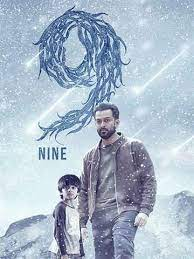

SPOTSTAR - HORROR

Malayalam horror movies have evolved significantly over the years, blending supernatural elements with strong storytelling and cultural depth. Early horror films in Malayalam cinema often leaned on mythological or ghostly themes rooted in Kerala's folklore and traditions. Films like Bhargavi Nilayam set the tone for psychological and atmospheric horror rather than relying on jump scares. In recent years, Malayalam filmmakers have explored more diverse and layered horror narratives, incorporating social issues and psychological drama. Movies like Ezra, The Priest, and Bhoothakaalam brought a modern twist to the genre with refined visuals and sound design. Unlike many mainstream horror films, Malayalam horror often focuses on emotional depth, character development, and slow-building suspense. The use of real-life settings and minimal CGI adds a sense of realism that intensifies the fear factor. Directors have also experimented with hybrid genres, combining horror with mystery, thriller, or family drama. This unique storytelling style has drawn critical acclaim and a growing fan base. With strong performances, rooted settings, and innovative narratives, Malayalam horror continues to stand out in Indian cinema. The genre is no longer limited to haunted houses and spirits but has expanded to explore human fears, guilt, and trauma. As the industry grows, audiences can expect even more creative and gripping horror films from Malayalam cinema.
POPULAR FILMS


